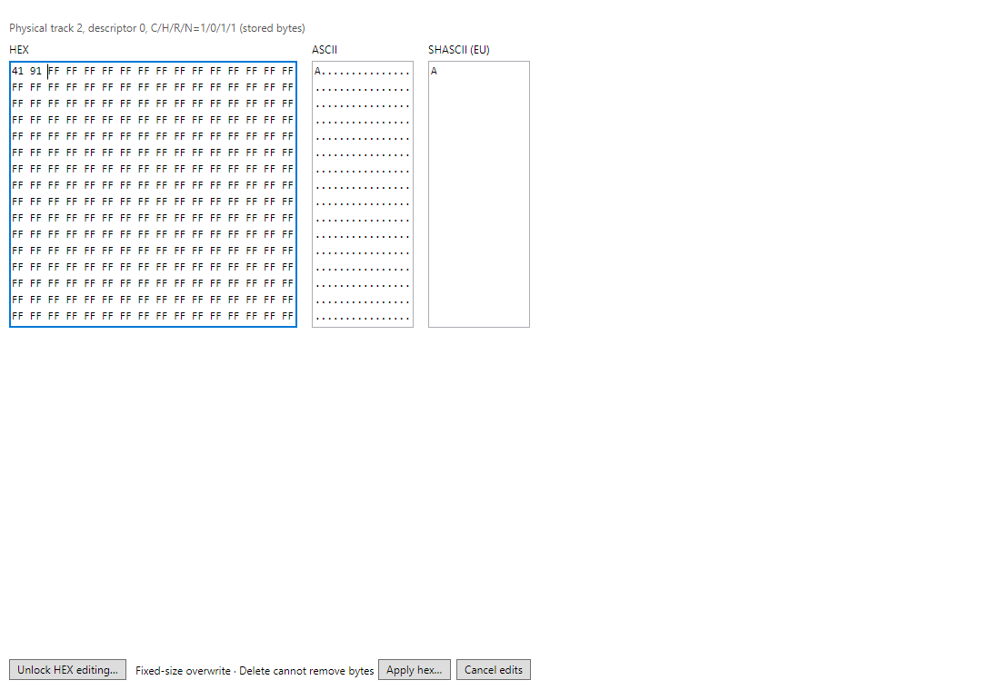
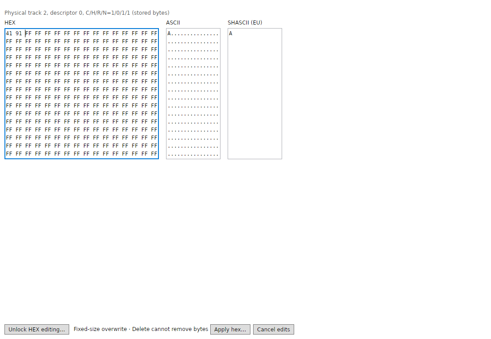
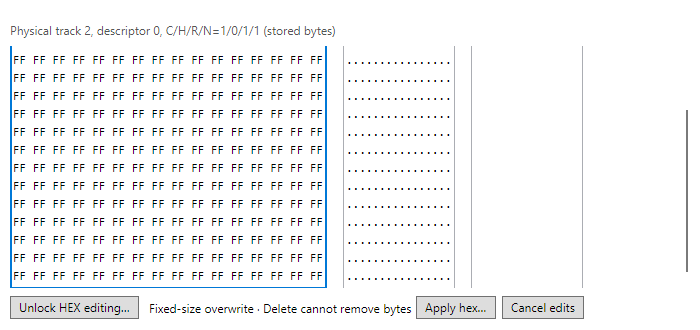
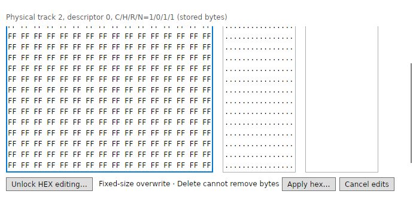
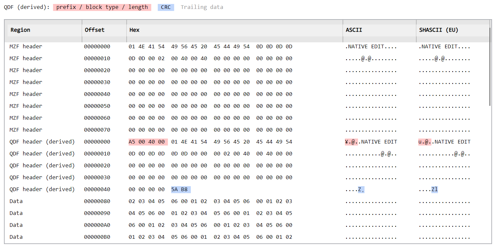
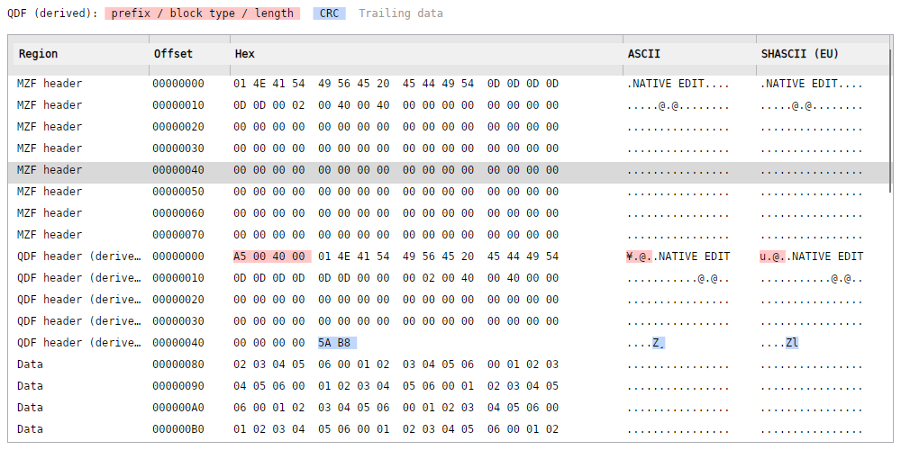
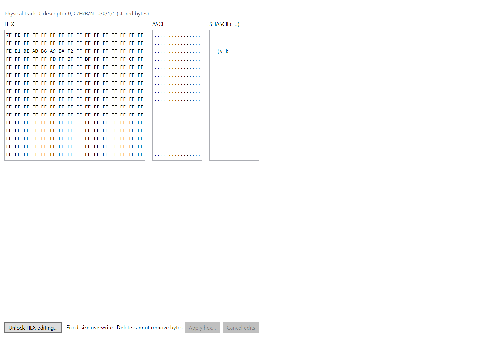
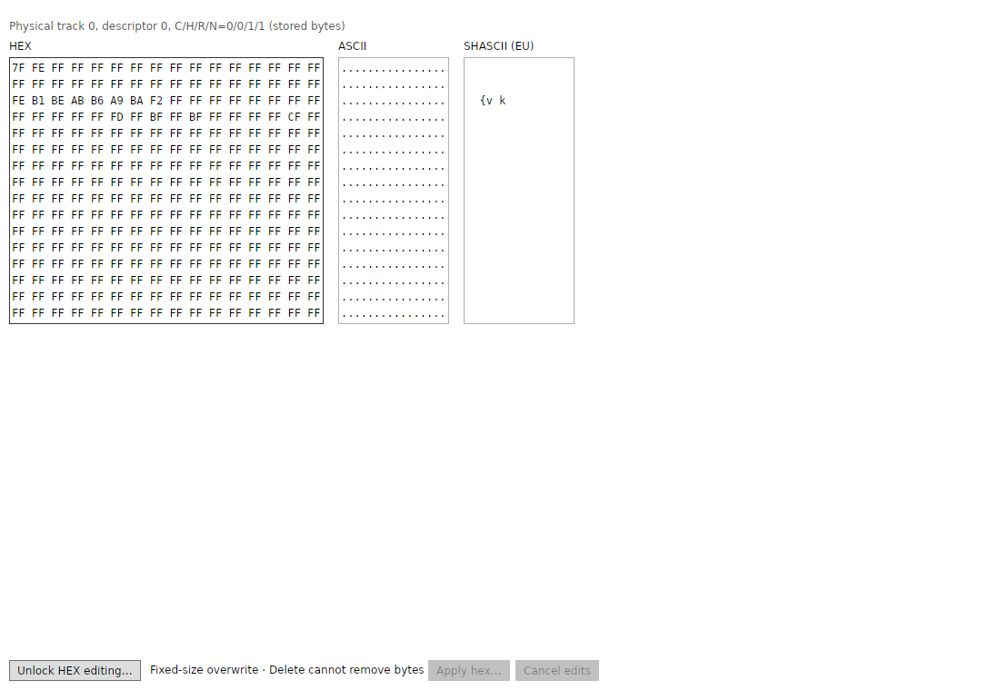

Jedna obrazovka vieweru: MZF hlavička, odvozená QDF hlavička, data a trailing bytes. Červený QDF prefix a modré CRC používají stejné ARGB hodnoty jako WPF; šedé trailing bytes zůstávají součástí zdroje. Viewer fixture je COLORED, payload 33 B a trailing 91 80 0D. Editor má HEX / ASCII / SHASCII vedle sebe se stejnými řádky a společným scrollováním. FF se v SHASCII překládá na mezeru, takže jeho sloupec může být na prázdném sektoru převážně prázdný.
PNG jsou nezměněné; kliknutí otevře plné rozlišení. WPF používá systémové DPI, testovací Avalonia render 96 DPI a nativní okna skutečné DPI platformy. Nativní scénáře mají jinou pracovní fixture než srovnávací COLORED. Zdroje a SHA-256 snímků.







